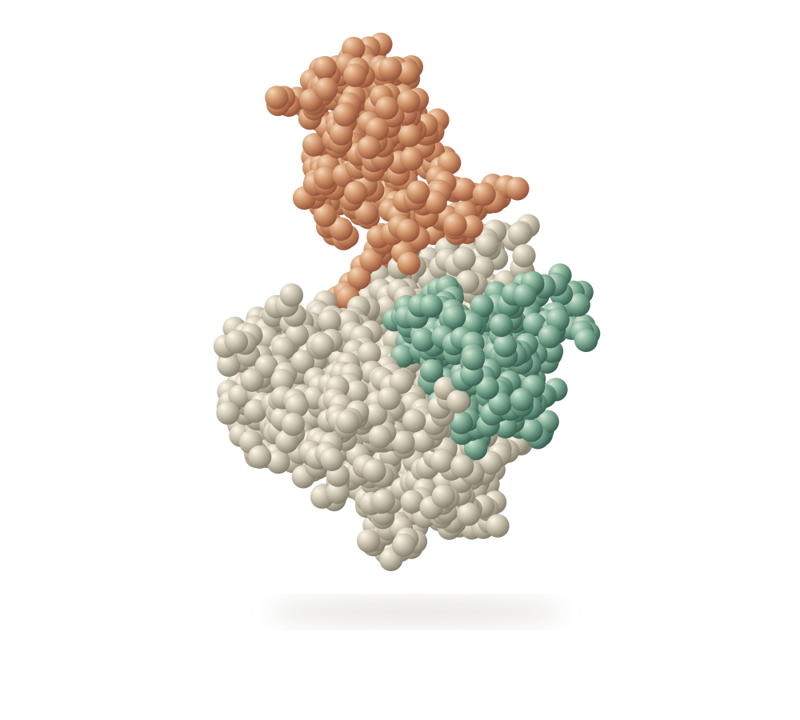

Crystal structures,
not generated models.
1AKE contains an inhibitor, not a captured ATP reaction. Only chain A and common heavy atoms are shown; water and ligands are omitted from the model.
Biology, held a little closer.
Meet a tiny enzyme with a moving lid.
Turn it, close it, and see what changes.
Real experimental structures. Yours to explore.

Adenylate kinaseEscherichia coli
214 amino acidsOne matched protein chain
A closer lookScroll to exploreProteins are not rigid objects. Parts of this enzyme can move around its binding site.
Adenylate kinase helps interconvert ATP, AMP, and ADP. Here, two X-ray structures capture different conformations: one unbound, the other bound to an inhibitor that mimics its substrates.
Place their cores on top of each other. The movement becomes much easier to see.
Follow the lidThe reference region used to align the structures.
A smaller domain around the AMP-binding region.
The region with the largest domain RMSD in this comparison.
Your turn
Drag to turn the protein.
Move the slider between the two structures.
Each bar is one matched residue. The shape of the plot depends on the alignment selection.
Choose two residues, or click two atoms in the 3D view.
Cα-to-Cα distances, not a binding affinity or reaction rate.
Behind the image
Every point starts in a published coordinate file. Every measurement can be reproduced outside this website.
1AKE contains an inhibitor, not a captured ATP reaction. Only chain A and common heavy atoms are shown; water and ligands are omitted from the model.
The closed structure is rotated and translated to match the open structure. The default uses Cα atoms in the core; the whole-chain alternative makes alignment sensitivity visible.
Atom correspondence requires the same residue number, insertion code, atom name, and residue identity. Missing or mismatched atoms are excluded. This is a curated pair, not a general sequence-alignment service.
Read the reproducibility notesThe slider linearly interpolates coordinates. It does not recover a physical transition path, a timescale, energies, or a molecular mechanism.
Atomic beads are a stylized display, not a solvent-accessible surface. Structural differences can reflect ligands, crystal conditions, and experimental uncertainty as well as conformational change.
Domain definitions and contextKeep exploring
Use the coordinates. Read the methods. Run the whole thing locally.